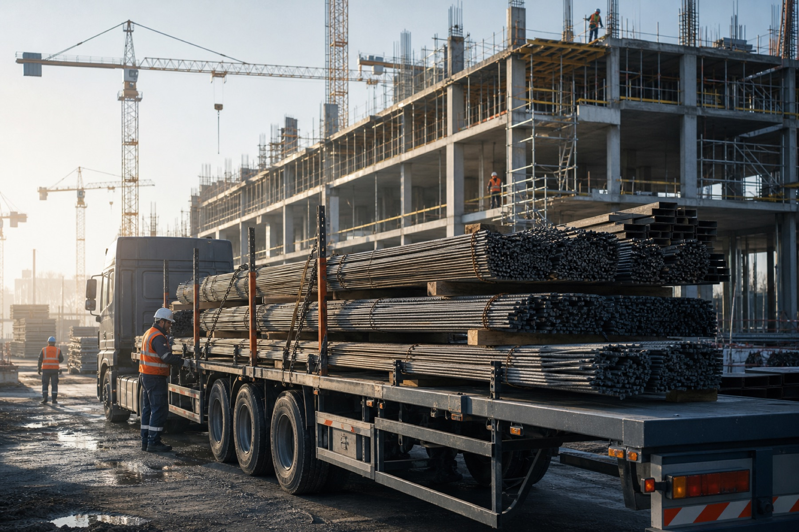

Строительные площадки
Учитываем пропускной режим, окно приемки и ограничения подъезда.
Организуем транспорт, документы, окна приемки и поэтапную отгрузку до строительной площадки, склада или производства.
Подбираем транспорт под вес, длину и способ разгрузки. Координируем отгрузку со складом и принимающей стороной.

Учитываем пропускной режим, окно приемки и ограничения подъезда.
Согласуем схему разгрузки и требования внутренней логистики.
Проверяем ближайший склад и доступный транспорт.
Готовим УПД, ТТН, сертификаты и доверенности.
Менеджер сопровождает отгрузку до подтверждения приемки.
Синхронизируем партии с графиком строительно-монтажных работ.